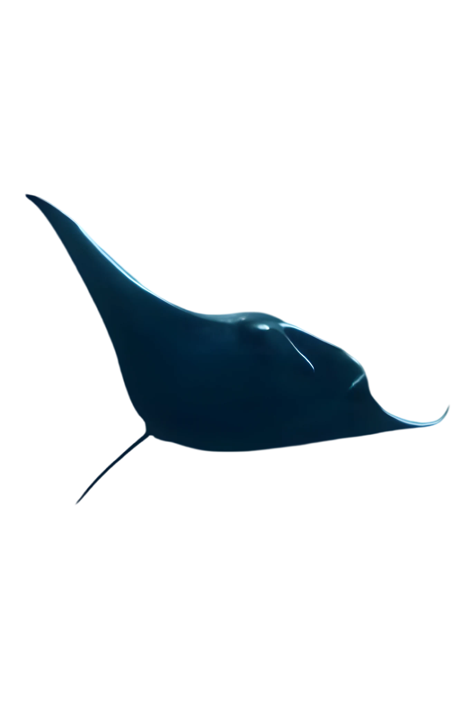

Linkedin
Linkedin



Unidades

OceanPact
CBO

Linked in
Servindo para criar conexões, o Linkedin vem para sanar a carência em redes sociais no universo corporativo.
Site Saiba MaisNossa Frota
70 embarcações
55 (21) 3032-6700
Rua da Glória, 122 - 11º andar
Glória, Rio de Janeiro/RJ - Brasil
CEP: 20241-180

EMERGÊNCIA 24H 0800 601 7228
Projeto não oficial, feito por Carlos e colegas para uma apresentação. Não é um site da OceanPact nem da CBO.
Marcas, nomes e imagens pertencem às respectivas empresas.